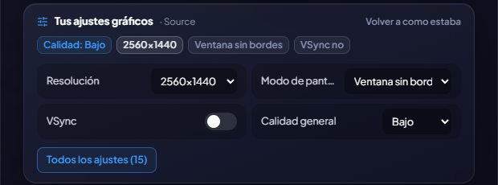

🎛️
更改每个游戏的画面设置
画质、分辨率、显示模式、FPS 上限、垂直同步……在 GameHub 中即可设置，无需打开游戏。
GameHub 会读取每个游戏保存的画面设置，并显示在它的详情页中。对于以已知格式保存设置的游戏，你还可以更改它们：主要设置（整体画质、分辨率、显示模式、FPS 上限和垂直同步）就在页面上，“所有设置”会打开一个窗口，分组列出全部设置并带有搜索框。
它支持使用 Unreal Engine（Borderlands 3 和 4、Hogwarts Legacy、THE FINALS……）、Unreal Engine 3（Rocket League、Killing Floor 2……）、Unity 和 Source（Counter-Strike 2……）制作的游戏，以及 GTA V（传承版和增强版）、Cyberpunk 2077 和 Far Cry 2 至 6。
第一次更改前，它会保存一份原始设置的副本：点击“恢复原始设置”即可恢复原样。游戏运行时它不允许更改任何内容（否则游戏退出时会覆盖），并且会尊重只读文件。
还支持《巫师 3》和《喋血复仇》，在《赛博朋克 2077》中还可以选择在哪个屏幕上玩。
使用方法
- 在游戏详情页中找到“你的画面设置”。
- 随意更改并点击“保存”：下次打开游戏时生效。

✦ 其他功能